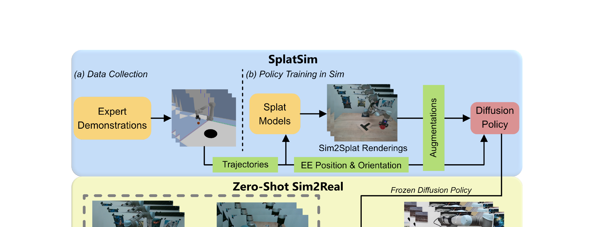

SplatSim: Zero-Shot Sim2Real Transfer of RGB Manipulation Policies Using Gaussian Splatting
Qureshi 等 · 2024 技术报告 · arXiv:2409.10161 v3 · Zotero 7JDN5CN2
SplatSim 用真实场景 3D Gaussian Splatting 替换传统模拟器的低保真 RGB 渲染，但仍让 PyBullet 负责机器人、物体状态与碰撞；策略在“真实外观 + 仿真动力学”的混合环境中训练，再零样本部署到真实相机。
§1 Introduction：RGB 策略的 Sim2Real 为什么比状态策略更难
物理模拟器能廉价产生精确动作与接触轨迹，但传统 mesh、纹理和光照渲染与真实相机分布差距巨大。状态或深度策略可用 domain randomization 缓解，RGB manipulation policy 却容易记住模拟器外观；为每个真实场景采集数据再适配，会丢失 simulation 的成本优势。
SplatSim 从真实场景短视频重建 Gaussian Splat，把被操作对象分割成可做刚体变换的高斯集合；PyBullet 等 physics engine 负责对象位姿和碰撞，高斯 renderer 根据相同位姿生成照片级 RGB。策略完全在这套混合 simulator 的 demonstration 上训练，再 zero-shot 部署到真实相机。
展开原文 · 核心组合
“using Gaussian Splatting as the primary rendering primitive”
§2 Related Work：domain randomization、NeRF/GS robotics 与 hybrid simulator
传统 Sim2Real 用随机纹理和光照覆盖视觉域，却可能产生不自然分布；NeRF/3DGS Real-to-Sim 用真实重建提高外观，但纯神经场不自带碰撞与接触。SplatSim 不让 Gaussian 学动力学，而是把物理交给成熟引擎，把 Gaussian 当可位姿驱动的 appearance shell。
相较后来的 GSWorld，它更聚焦单场景、少任务的 zero-shot RGB policy transfer；GSWorld 进一步定义可复用 GSDF 资产、闭环 DAgger、RL、benchmark 和双向 real↔sim 工作流。SplatSim 的贡献是先证明“真实外观 + 模拟物理”足以显著缩小 observation gap。
§3 它解决的是 observation gap
- $R_{GS}$
- 从真实采集训练的 splat 场景渲染 RGB，缩小纹理、光照和背景差异。
- $F_{physics}$
- PyBullet 推进刚体状态并计算接触；GS 本身不提供可用碰撞。
- $\xi$
- 相机视角与可随机化渲染条件。
§4 从专家示范到真机

1. 拍摄真实环境并拟合 GS
把目标域外观搬回模拟器。
输入是什么：当前任务提供的原始观测、指令、机器人状态或训练数据。先明确这些输入，才能判断后面的结论是否用了部署时拿不到的信息。
这一步究竟做什么：本步骤执行“拍摄真实环境并拟合 GS”。具体来说，把目标域外观搬回模拟器。 它把真实世界素材转换为既能渲染外观、又能与物理模块对齐的数字表示。
输出到哪里：参数得到更新的模型，或能供下一轮训练使用的新监督信号。这个结果会交给下一步“在 PyBullet 获取交互轨迹”继续处理。
为什么不能省略：它把未经处理的原始问题变成后续模块可以计算的输入，是整条链路的起点。
2. 在 PyBullet 获取交互轨迹
物理状态仍由可碰撞代理几何管理。
输入是什么：来自上一步“拍摄真实环境并拟合 GS”的产物：参数得到更新的模型，或能供下一轮训练使用的新监督信号。本步骤还会按论文设置读取当前条件、时间步或训练信号。
这一步究竟做什么：本步骤执行“在 PyBullet 获取交互轨迹”。具体来说，物理状态仍由可碰撞代理几何管理。 这里处理的只是整条链路中的一个接口：把上一步的结果整理成下一步能够正确读取和继续计算的形式。
输出到哪里：经过本步骤处理、含义更明确的中间结果。这个结果会交给下一步“用 GS RGB 训练策略”继续处理。
为什么不能省略：它承担上下两步之间的接口；缺少它，前一步产生的信息无法以正确格式或正确含义传到下一步。
3. 用 GS RGB 训练策略
策略学习真实外观下的视觉—动作映射。
输入是什么：来自上一步“在 PyBullet 获取交互轨迹”的产物：经过本步骤处理、含义更明确的中间结果。本步骤还会按论文设置读取当前条件、时间步或训练信号。
这一步究竟做什么：本步骤执行“用 GS RGB 训练策略”。具体来说，策略学习真实外观下的视觉—动作映射。 它把真实世界素材转换为既能渲染外观、又能与物理模块对齐的数字表示。
输出到哪里：参数得到更新的模型，或能供下一轮训练使用的新监督信号。这个结果会交给下一步“不微调部署真机”继续处理。
为什么不能省略：前面的数据或分数本身不会自动改变模型；必须通过损失函数把误差信号变成参数更新。
4. 不微调部署真机
验证观察域差距是否已足够缩小。
输入是什么：来自上一步“用 GS RGB 训练策略”的产物：参数得到更新的模型，或能供下一轮训练使用的新监督信号。本步骤还会按论文设置读取当前条件、时间步或训练信号。
这一步究竟做什么：本步骤执行“不微调部署真机”。具体来说，验证观察域差距是否已足够缩小。 这里处理的只是整条链路中的一个接口：把上一步的结果整理成下一步能够正确读取和继续计算的形式。
输出到哪里：可发送给机器人控制器的动作，以及执行后重新观测到的真实状态。这是图中这条链路的最终产物，随后会进入真实执行、模型更新或指标评测。
为什么不能省略：机器人动作会改变下一次观测；只有执行后重新读取现实，才能发现预测误差并阻止错误连续累积。
§5 为什么必须混合
§6 路线意义
SplatSim 不是 learned world model；它是给 WAM/VLA 造真实感训练数据和可控评测环境的基础设施。其价值在于同时提供真实像素分布与可干预动作轨迹。
§7 边界
重建误差、动态物体分解、遮挡补全和 GS—physics pose 同步都会形成新 gap；真实外观也无法修复错误质量、摩擦或柔性动力学。
§8 实验归因与复现：86.25% 背后是哪一段对齐在起作用
最小可信复现清单
- 记录真实扫描轨迹、重建图像数、对象分割与 Gaussian 清理流程。
- 标定相机内外参及 sim/real 机器人、物体坐标转换。
- 给出碰撞 mesh、质量、摩擦和控制延迟校准。
- 相同示范与策略架构下比较 mesh、GS、randomized rendering。
- 报告重建成本、仿真 FPS、训练吞吐和真实成功率。
SplatSim 缩小的是 RGB observation gap；物理仍由 simulator 提供，“zero-shot”指策略没有用真实交互训练。